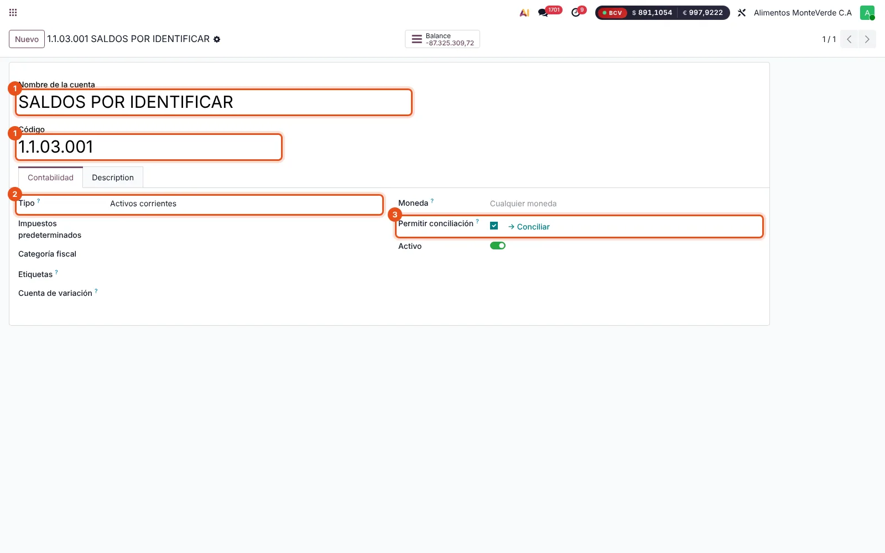
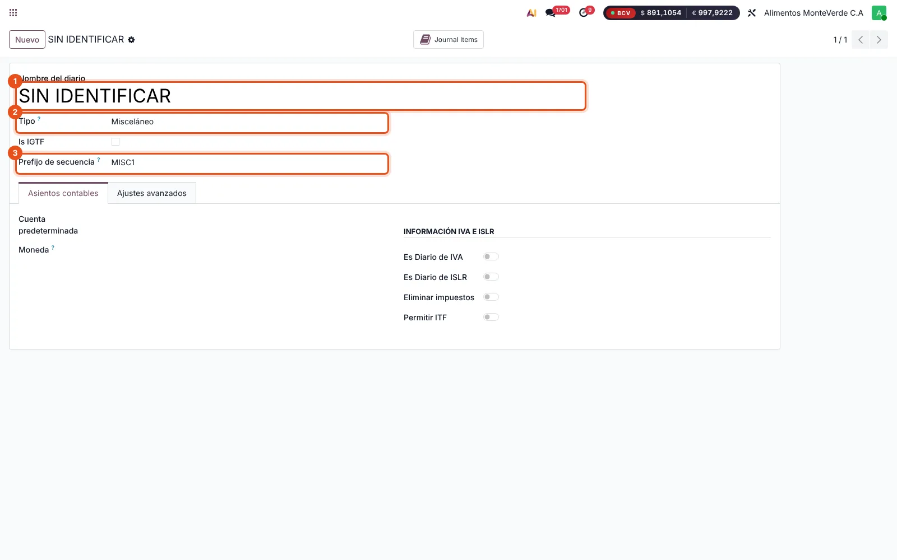
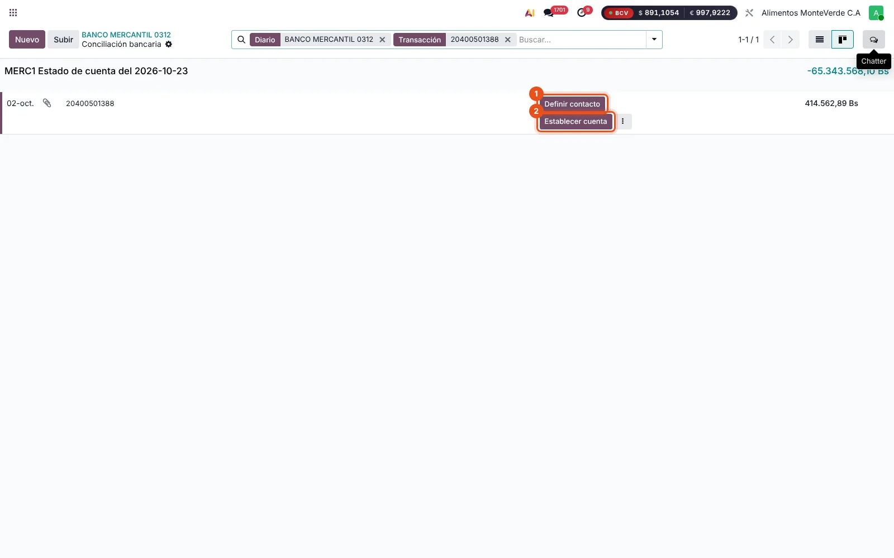
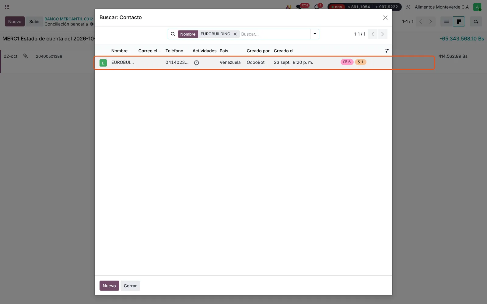
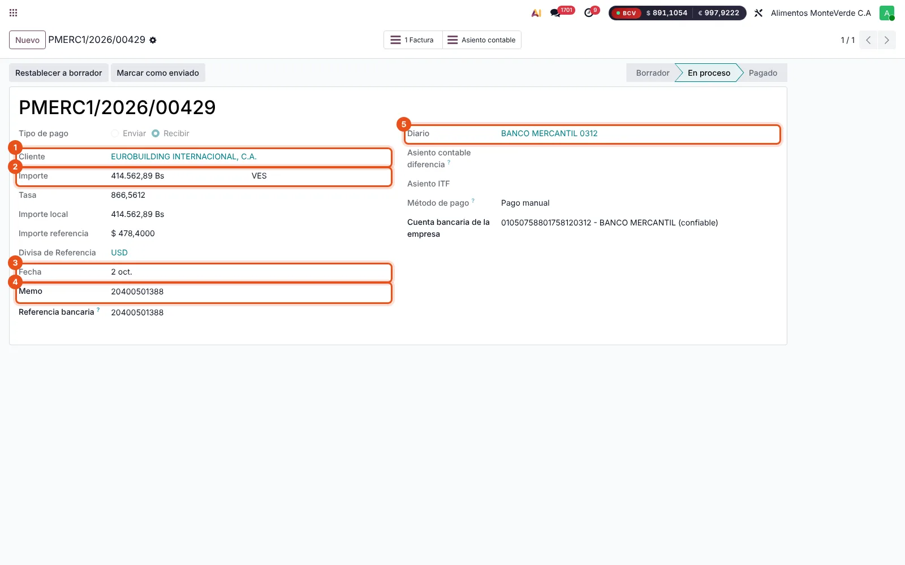
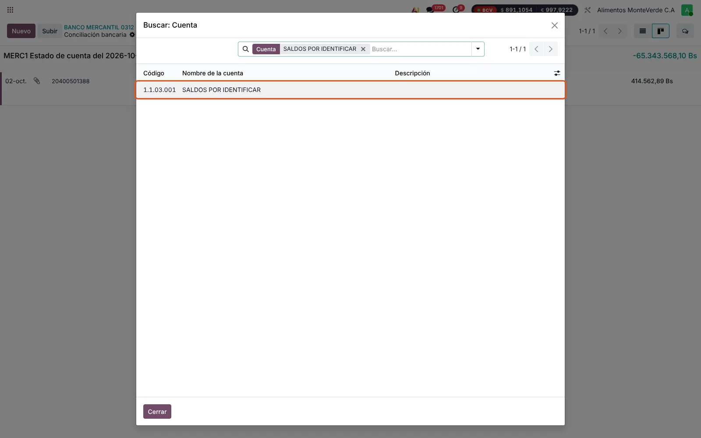
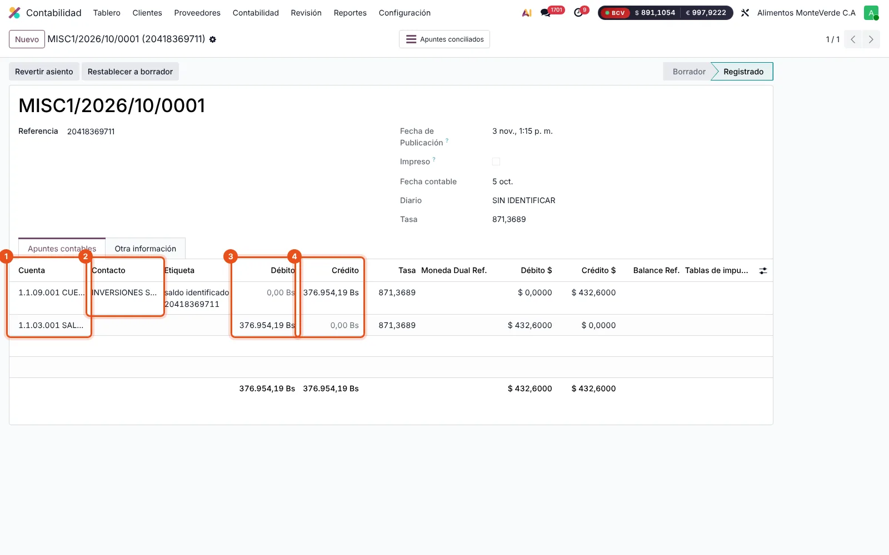
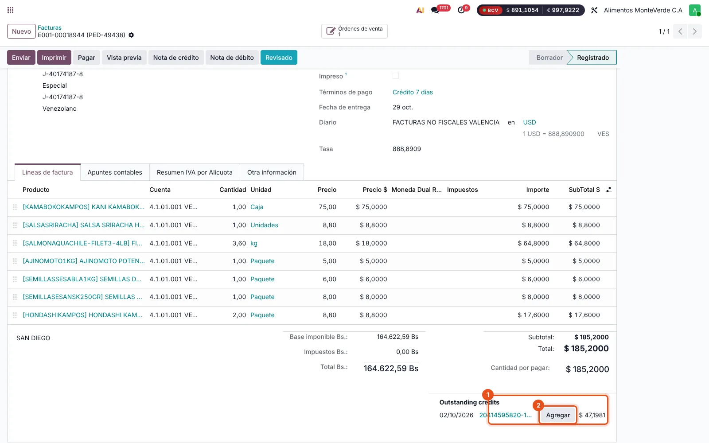
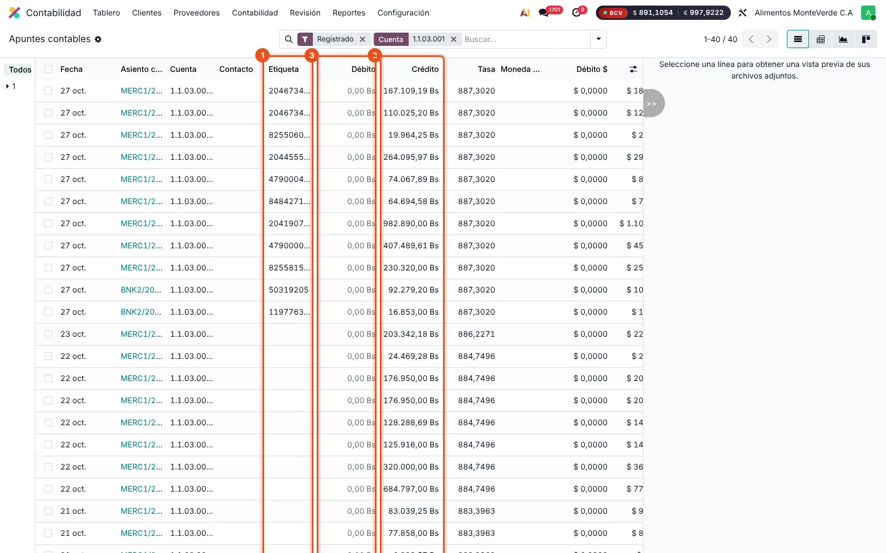

Fase 1 · conciliación bancaria
Depósito sin identificar
| Cuenta | Débito | Crédito |
|---|---|---|
| Banco Mercantil | 414.562,89 | |
| 1.1.03.001 Saldos por identificar | 414.562,89 |
Sin contacto. Etiqueta: la referencia bancaria.
El camino completo de un depósito que llega al banco sin que se sepa de quién es: dónde se registra, cómo se saca de la cuenta de saldos por identificar cuando se identifica y cómo se aplica al cliente. Manual para el consultor y el usuario, con capturas de producción del 03/11/2026.
Un depósito puede llegar a identificarse antes o después de conciliar el banco. Eso decide el camino:
| Situación | Camino | Pasa por 1.1.03.001 |
|---|---|---|
| Se sabe quién pagó al conciliar el banco | Camino corto: conciliar la línea del extracto con el cobro del cliente | No |
| No se sabe quién pagó | Fase 1: mandar el depósito a saldos por identificar | Sí, entra |
| Se identifica después | Fase 2: asiento de identificación en el diario SIN IDENTIFICAR Fase 3: conciliar la cuenta y aplicar el cobro a las facturas | Sí, sale |
Los tres asientos del camino largo, con el monto del ejemplo:
| Cuenta | Débito | Crédito |
|---|---|---|
| Banco Mercantil | 414.562,89 | |
| 1.1.03.001 Saldos por identificar | 414.562,89 |
Sin contacto. Etiqueta: la referencia bancaria.
| Cuenta | Débito | Crédito |
|---|---|---|
| 1.1.03.001 Saldos por identificar | 414.562,89 | |
| 1.1.09.001 CxC (cliente) | 414.562,89 |
Con el contacto del cliente. Misma referencia.
a) En 1.1.03.001: el débito de la fase 2 se concilia con el crédito de la fase 1. La referencia queda en cero.
b) En la CxC: el crédito del cliente se aplica a sus facturas («Agregar»).


1. Modelo de conciliación «SALDO POR IDENTIFICAR». En Contabilidad › Configuración › Modelos de conciliación: tipo botón, cuenta 1.1.03.001, etiqueta igual a la referencia de la transacción. Así la fase 1 es un solo clic y no se escoge otra cuenta por error.
2. Tipo de cuenta. 1.1.03.001 es «Activos corrientes», pero recibe depósitos (créditos): hoy tiene saldo acreedor de 87.325.309,72 Bs. Contabilidad debe decidir si se reclasifica como pasivo corriente.
Ejemplo real: el crédito del 02/10 ref. 20400501388 es de EUROBUILDING INTERNACIONAL, C.A. Aribel Beltran ya registró su cobro, PMERC1/2026/00429, y lo aplicó a la cuenta del cliente. La línea del extracto sigue sin conciliar: es el último paso.




Cuando se sabe de quién es el depósito:

MISC1/2026/10/0001 (INVERSIONES SOJA, ref. 20418369711): estructura correcta, pero con un error (ver sección 8)
Si el cliente pagó más o menos de lo que se identifica, se identifica el monto del depósito completo. La diferencia queda en la cuenta del cliente como saldo a favor, o se cierra contra diferencial cambiario si es por tasa.

Los saldos por identificar pendientes son los apuntes no conciliados de la cuenta 1.1.03.001. Se revisan en Contabilidad › Contabilidad › Apuntes contables, filtrando por la cuenta. Conviene revisarlos cada semana.

| Origen de los pendientes (03/11/2026) | Apuntes | Saldo Bs |
|---|---|---|
| Apertura 30/09: SSID de Profit por banco | 11 | −79.913.535,93 |
| Depósitos de octubre, Banco Mercantil 0312 | 25 | −7.679.595,78 |
| Depósitos de octubre, Banesco 7128 | 2 | −109.132,20 |
| Identificación sin depósito (MISC1/2026/10/0001) | 1 | 376.954,19 |
| Total | 39 | −87.325.309,72 |
Los SSID de la apertura son saldos agregados por banco que vienen de Profit, sin detalle por depósito. Cuando se identifica uno, la fase 2 es igual y en la fase 3 se concilia parcialmente contra la línea SSID de ese banco.
Identifica 376.954,19 Bs de INVERSIONES SOJA (ref. 20418369711), pero la línea de esa referencia en el extracto del Mercantil (05/10, 421.785,00 Bs) sigue sin conciliar: nunca pasó por 1.1.03.001. Por eso la cuenta tiene un débito abierto sin contrapartida, y los montos difieren en 44.830,81 Bs. Hay que conciliar esa línea contra 1.1.03.001 (fase 1) y luego hacer la fase 3. La diferencia queda pendiente de identificar o se ajusta la identificación.
Asiento en borrador del 21/10 (Johana Matute): Banco Mercantil / 1.1.03.001 por 5.686,69 Bs. Duplica la conciliación de la línea MERC1/2026/01548 (ref. 20467200012), que ya está en la cuenta. Se puede eliminar.
El cobro PMERC1/2026/00429 de EUROBUILDING (414.562,89 Bs) ya está aplicado al cliente, pero la línea del extracto no está conciliada con él. Se resuelve con el camino corto (sección 3).